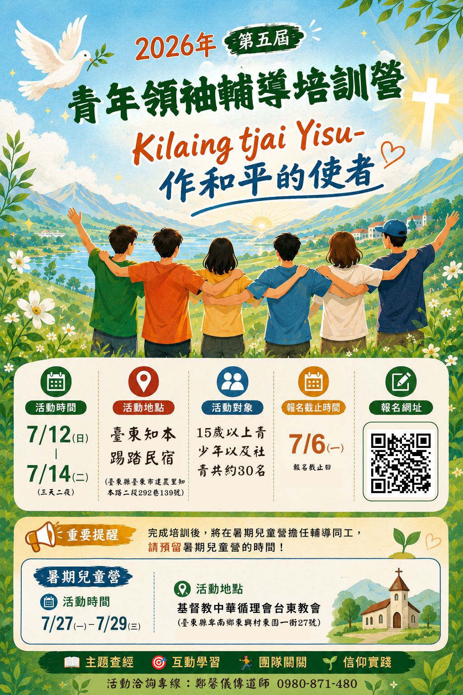

7/12（日）– 7/14（二）
- 地點
- 臺東知本踢踏民宿
- 地址
- 臺東縣臺東市建農里知本路二段292巷139號
- 對象
- 15 歲以上青少年及社青，約 30 名
- 截止
- 7/6（一）
2026 · 5TH YOUTH LEADERSHIP CAMP
Kilaing tjia Yisu－和一群同樣願意跨出去的青年，在信仰、團隊與服務中，看見自己的位置。
活動時間7/12（日）– 7/14（二）
活動地點臺東知本踢踏民宿
活動對象15 歲以上青年與社青
名額／截止日約 30 名・7/6 截止

CAMP INFORMATION
完成青年領袖培訓後，將在暑期兒童營擔任輔導同工；報名前請一併預留兩段活動時間。
學習的旅程
透過學習、體驗與實踐，成為信仰與生命的領袖
2026 CAMP SCHEDULE
從相遇、操練到差遣，讓每一段時間都成為信仰與同行的記號。
行程可能依現場狀況彈性調整，請以營會工作人員公告為準。
REGISTRATION FLOW
未滿 18 歲者需要家長同意書；填寫生日後，系統會自動提醒您。
JOIN THE CAMP
填寫資料不需要急。畫面會暫存在這台裝置，正式串接資料庫前，送出內容不會上傳到主辦單位。
GOOD TO KNOW
還有其他問題，歡迎致電活動洽詢專線。
期待認識自己、學習團隊合作，並願意在信仰與生活中跨出下一步的青年都很適合。正式年齡資格以主辦單位公告為準。
可以先填寫資料，但需要下載家長／監護人同意書，完成簽署並上傳後才算完成報名。
正式系統上線後，請聯絡主辦單位協助修改；送出前可先仔細確認資料。
完成青年領袖培訓後，將在暑期兒童營擔任輔導同工，請預留 7/12–7/14 與 7/27–7/29 兩段時間。
REGISTRATION COMPLETE
主辦單位將依填寫資料與你聯繫。